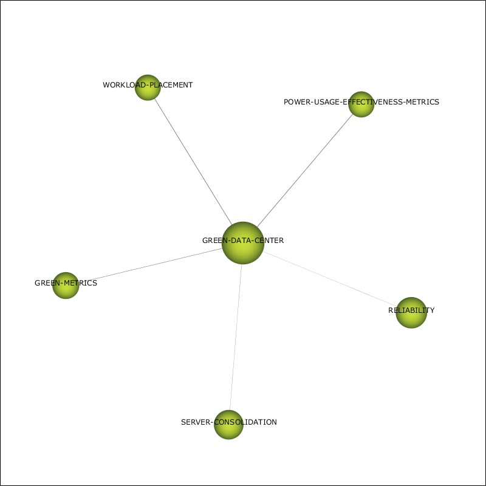

| Node A | Node B | Weight |
| GREEN-DATA-CENTER | RELIABILITY | 0.02 |
| GREEN-DATA-CENTER | SERVER-CONSOLIDATION | 0.03 |
| GREEN-DATA-CENTER | GREEN-METRICS | 0.06 |
| GREEN-DATA-CENTER | WORKLOAD-PLACEMENT | 0.1 |
| GREEN-DATA-CENTER | POWER-USAGE-EFFECTIVENESS-METRICS | 0.1 |
| Node A | Cluster node A | Node B | Cluster node B | Weight |
| DATA-CENTER-NETWORKS | POWER-CONSUMPTION | GREEN-DATA-CENTER | GREEN-DATA-CENTER | 0.03 |
| GREEN-DATA-CENTER | GREEN-DATA-CENTER | ENERGY-EFFICIENCY | CLOUD-COMPUTING | 0.05 |
| GREEN-DATA-CENTER | GREEN-DATA-CENTER | GREEN-IT | INFORMATION-SYSTEMS | 0.01 |
| GREEN-DATA-CENTER | GREEN-DATA-CENTER | VIRTUALIZATION | CLOUD-COMPUTING | 0.03 |
| GREEN-DATA-CENTER | GREEN-DATA-CENTER | IDLE | POWER-MANAGEMENT | 0.05 |
| RELIABILITY | GREEN-DATA-CENTER | POWER-AWARE-COMPUTING | POWER-AWARE-COMPUTING | 0.01 |
| RELIABILITY | GREEN-DATA-CENTER | EXPERIMENTATION | 0.08 | |
| GREEN-IT | INFORMATION-SYSTEMS | SERVER-CONSOLIDATION | GREEN-DATA-CENTER | 0.01 |
| VIRTUALIZATION | CLOUD-COMPUTING | SERVER-CONSOLIDATION | GREEN-DATA-CENTER | 0.09 |
| GREEN-IT | INFORMATION-SYSTEMS | GREEN-METRICS | GREEN-DATA-CENTER | 0.01 |
| GREEN-IT | INFORMATION-SYSTEMS | POWER-USAGE-EFFECTIVENESS-METRICS | GREEN-DATA-CENTER | 0.02 |